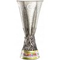
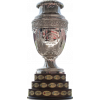
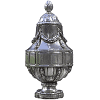

The Story
Ronaldo Luís Nazário de Lima (Brazilian Portuguese: born 18 September 1976), commonly known as Ronaldo or Ronaldo Nazário, is a Brazilian business owner, president of La Liga club Real Valladolid, owner of Brasileiro Série B club Cruzeiro and a retired professional footballer who played as a striker. Popularly dubbed O Fenômeno ('The Phenomenon')[5] and also nicknamed R9,[5] he is widely considered as one of the greatest players of all time. As a multi-functional striker who brought a new dimension to the position, Ronaldo has been the influence for a generation of strikers that have followed. His individual accolades include being named FIFA World Player of the Year three times and winning two Ballon d'Or awards.
Ronaldo started his career at Cruzeiro and moved to PSV in 1994. He joined Barcelona in 1996 for a then world record transfer fee and at 20 years old, he was named the 1996 FIFA World Player of the Year, making him the youngest recipient of the award. In 1997, Inter Milan broke the world record fee to sign Ronaldo, making him the first player since Diego Maradona to break the world transfer record twice. At 21, he received the 1997 Ballon d'Or and remains the youngest recipient of the award. By the age of 23, Ronaldo had scored over 200 goals for club and country. However, after a series of knee injuries and recuperation, he was inactive for almost three years. Ronaldo joined Real Madrid in 2002 and won the 2002–03 La Liga title. He had spells at AC Milan and Corinthians before retiring in 2011, having suffered further injuries.
Ronaldo played for Brazil in 98 matches, scoring 62 goals and is the third-highest goalscorer for his national team. At age 17, he was the youngest member of the Brazilian squad that won the 1994 FIFA World Cup. At the 1998 FIFA World Cup, Ronaldo received the Golden Ball as the player of the tournament after he helped Brazil reach the final, where he suffered a convulsive fit hours before kick-off. He won the 2002 FIFA World Cup, starring in a front three with Ronaldinho and Rivaldo. He scored twice in the final and received the Golden Boot as the tournament's top goalscorer. At the 2006 FIFA World Cup, Ronaldo scored his 15th World Cup goal, a tournament record at the time. He also won the 1997 Copa América, where he became the player of the tournament and the 1999 Copa América, where he was the top goalscorer.
One of the most marketable sportsmen in the world during his playing career, the first Nike Mercurial boots called R9 were commissioned for Ronaldo in 1998. He was named in the FIFA 100 list of the greatest living players compiled in 2004 by Pelé also and was inducted into the Brazilian Football Museum Hall of Fame, Italian Football Hall of Fame, Inter Milan Hall of Fame and Real Madrid Hall of Fame. In 2020, Ronaldo was named in the Ballon d'Or Dream Team, a greatest all-time XI published by France Football magazine. In retirement from sport, Ronaldo has continued his work as a United Nations Development Programme Goodwill Ambassador, a position to which he was appointed in 2000. He served as an ambassador for the 2014 FIFA World Cup. Ronaldo became the majority owner of Real Valladolid in September 2018, after buying 51% of the club's shares. In December 2021, he bought a controlling stake in his boyhood club Cruzeiro, investing $70 million in the club.
GENERAL INFORMATION
- Date of birth/Age: Sep 22, 1976 (46)
- Place of birth: Brazil, Rio de Janeiro
- Citizenship: Brazil / Spain
- Height: 1,83 m
- Position: Centre-Forward
- Caps/Goals: 99 / 62


TRANSFER HISTORY
9 Transfers in total
| Season | Date | Left | Joined | MV | Fee |
|---|---|---|---|---|---|
| 10/11 | Feb 13, 2011 | Corinthians | Retired | $1.10m | - |
| 08/09 | Jan 1, 2009 | Without Club | Corinthians | $5.50m | - |
| 08/09 | Jul 1, 2008 | AC Milan | Without Club | $15.40m | - |
| 06/07 | Jan 30, 2007 | Real Madrid | AC Milan | $30.25m | $8.25m |
| 02/03 | Aug 31, 2002 | Inter | Real Madrid | - | $49.50m |
| 97/98 | Jul 22, 1997 | Barcelona | Inter | - | $29.15m |
| 96/97 | Jul 16, 1996 | PSV Eindhoven | Barcelona | - | $16.50m |
| 94/95 | Jul 1, 1994 | Cruzeiro | PSV Eindhoven | - | $6.02m |
| 92/93 | Jan 1, 1993 | São Cristóvão | Cruzeiro | - | free transfer |
CAREER STATS
16 Type of Leagues
| Competition | Appearances | Goals | Assists | Yellow cards | Second yellow cards | Red cards | Minutes played |
|---|---|---|---|---|---|---|---|
| LaLiga | 164 | 116 | 33 | 13 | 1 | - | 13.132' |
| Serie A (Italy) | 88 | 58 | 12 | 5 | - | 1 | 6.767' |
| Eredivisie | 46 | 42 | 4 | - | - | - | 3.838' |
| Champions League | 40 | 14 | 10 | 2 | - | 1 | 2.909' |
| Série A (Brazil) | 31 | 18 | 6 | 5 | - | - | 2.471' |
| UEFA Cup | 23 | 15 | 4 | 1 | - | - | 1.751' |
| Libertadores | 17 | 5 | - | 1 | - | - | 1.465' |
| Copa del Rey | 15 | 10 | 2 | 2 | - | - | 1.241' |
| Italy Cup | 8 | 3 | - | - | - | - | 461' |
| Cup Winners' Cup | 7 | 5 | 1 | - | - | - | 600' |
| KNVB beker | 4 | 3 | 1 | - | - | - | 251' |
| Supercopa | 3 | 3 | 2 | 1 | - | - | 270' |
| UEFA Champions League Qualifying | 2 | 2 | - | - | - | - | 133' |
| Recopa Sudamericana | 2 | - | - | - | - | - | 210' |
| Play-Out Serie A (Italy) | 1 | - | - | - | - | - | 45' |
| Intercontinental Cup | 1 | 1 | - | - | - | - | 82' |
ALL TITLES
65 Trophies
| Title | Qty | Season | |
|---|---|---|---|
 |
World Cup winner | 2x | 2002, 1994 |
 |
The Best FIFA Men's Player | 3x | 2002, 1997, 1996 |
 |
Winner Ballon d'Or | 2x | 2002, 1997 |
| World Cup participant | 4x | 2006, 2002, 1998, 1994 | |
 |
Intercontinental Cup winner | 1x | 2002 |
 |
Europapokal der Pokalsieger Sieger | 1x | 96/97 |
|  | Uefa Cup winner | 1x | 97/98 |
 |
Spanish champion | 2x | 06/07, 02/03 |
| World Cup runner-up | 1x | 1998 | |
| Second highest goal scorer | 1x | 05/06 | |
| Footballer of the Year | 1x | 1998 | |
|  | Copa América winner | 2x | 98/99, 96/97 |
| Copa América participant | 3x | 98/99, 96/97, 94/95 | |
| Confederations Cup participant | 1x | 1997 | |
 |
Uefa Supercup winner | 2x | 06/07, 01/02 |
| Best foreign player | 2x | 1998, 1997 | |
| Confederations Cup winner | 1x | 1997 | |
| Copa América runner-up | 1x | 94/95 | |
| Brazilian cup winner | 2x | 2009, 1993 | |
|  | Dutch Cup winner | 1x | 95/96 |
| Spanish cup winner | 1x | 96/97 | |
| Spanish Super Cup winner | 2x | 02/03, 95/96 | |
| Third place at the Olympic Games | 1x | 95/96 | |
| Top scorer | 6x | 05/06, 03/04, 01/02, 98/99, 96/97, 94/95 | |
| Player of the Year | 3x | 97/98, 97,98, 97/98 | |
Contact me
Due to being passionate about technology, I started a career transition to software developer. I decided to start this journey by moving to Calgary-AB located in Canada, where I will study Software Development at Bow Valley College.
Despite all the challenges faced as a newcomer, I couldn't be happier with the choices made.
I have a study permit, but I'm allowed work up to 20 hours per week.
Basic knowledge in: Python, Java, C++, HTML, CSS, JavaScript, Git e GitHub.